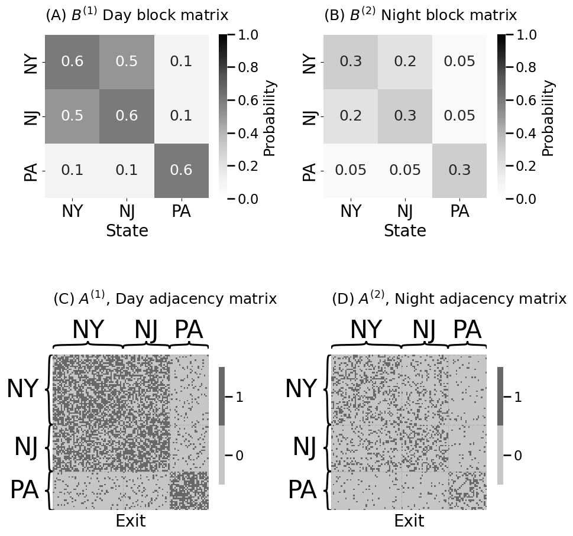
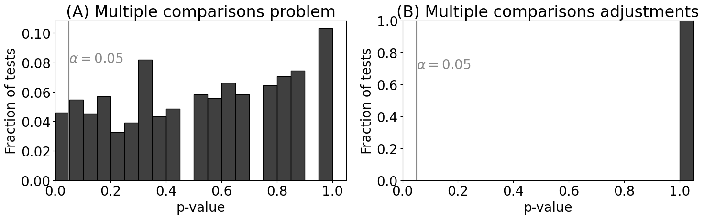
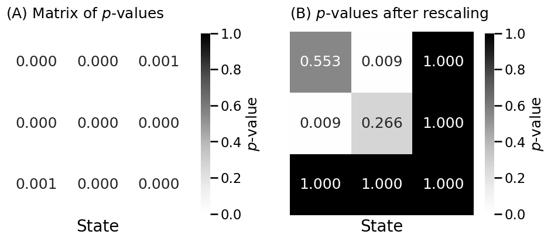

7.2 Two-sample testing for SBMs#
mode = "svg"
import matplotlib
font = {'family' : 'Dejavu Sans',
'weight' : 'normal',
'size' : 20}
matplotlib.rc('font', **font)
import matplotlib
from matplotlib import pyplot as plt
import numpy as np
from graspologic.simulations import sbm
ns = [45, 30, 25] # number of exits
states = ["NY", "NJ", "PA"]
# z is a column vector indicating which state each exit is in
z = np.repeat(states, ns)
Bnight = np.array([[.3, .2, .05], [.2, .3, .05], [.05, .05, .3]])
Bday = Bnight*2 # day time block matrix is generally 50% more than night
# people tend to commute from New Jersey to New York during the day
# at anomalously high rates
Bday[0, 1] = .5; Bday[1,0] = .5
np.random.seed(0)
Anight = sbm(ns, Bnight)
Aday = sbm(ns, Bday)
from graphbook_code import heatmap
import os
fig, axs = plt.subplots(2, 2, figsize=(10, 10))
heatmap(Bday, legend_title="Probability", ax=axs[0][0],
xtitle="State", xticklabels=states, yticklabels=states, vmin=0, vmax=1,
title="(A) $B^{(1)}$ Day block matrix", annot=True)
heatmap(Aday.astype(int), ax=axs[1][0],
xtitle="Exit", inner_hier_labels=z,
title="(C) $A^{(1)}$, Day adjacency matrix", shrink=0.5)
heatmap(Bnight, legend_title="Probability", ax=axs[0][1],
xtitle="State", vmin=0, vmax=1, xticklabels=states, yticklabels=states,
title="(B) $B^{(2)}$ Night block matrix", annot=True)
heatmap(Anight.astype(int), ax=axs[1][1],
xtitle="Exit", inner_hier_labels=z,
title="(D) $A^{(2)}$, Night adjacency matrix", shrink=0.5)
fig.tight_layout()
os.makedirs("Figures", exist_ok=True)
fname = "twosamp_sbm_ex"
if mode != "png":
os.makedirs(f"Figures/{mode:s}", exist_ok=True)
fig.savefig(f"Figures/{mode:s}/{fname:s}.{mode:s}")
os.makedirs("Figures/png", exist_ok=True)
fig.savefig(f"Figures/png/{fname:s}.png")

from scipy.stats import fisher_exact
K = 3
Pvals = np.empty((K, K))
# fill matrix with NaNs
Pvals[:] = np.nan
# get the indices of the upper triangle of Aday
upper_tri_idx = np.triu_indices(Aday.shape[0], k=1)
# create a boolean array that is nxn
upper_tri_mask = np.zeros(Aday.shape, dtype=bool)
# set indices which correspond to the upper triangle to True
upper_tri_mask[upper_tri_idx] = True
for k in range(0, K):
for l in range(k, K):
comm_mask = np.outer(z == states[k], z == states[l])
table = [[Aday[comm_mask & upper_tri_mask].sum(),
(Aday[comm_mask & upper_tri_mask] == 0).sum()],
[Anight[comm_mask & upper_tri_mask].sum(),
(Anight[comm_mask & upper_tri_mask] == 0).sum()]]
Pvals[k,l] = fisher_exact(table)[1]
import numpy as np
from graspologic.simulations import er_np
import seaborn as sns
from scipy.stats import binomtest
ncoins = 5000 # the number of coins
p = 0.5 # the true probability
n = 500 # the number of flips
# the number of heads from each experiment
experiments = np.random.binomial(n, p, size=ncoins)
# perform binomial test to see if the number of heads we obtain supports that the
# true probabiily is 0.5
pvals = [binomtest(nheads_i, n, p=p).pvalue for nheads_i in experiments]
from statsmodels.stats.multitest import multipletests
alpha = 0.05 # the desired alpha of the test
_, adj_pvals, _, _ = multipletests(pvals, alpha=alpha, method="holm")
import seaborn as sns
fig, axs = plt.subplots(1, 2, figsize=(15, 5))
sns.histplot(pvals, stat="probability", bins=20, ax=axs[0], color="black")
axs[0].set_title("(A) Multiple comparisons problem")
axs[0].set_xlabel("p-value")
axs[0].set_ylabel("Fraction of tests")
axs[0].axvline(alpha, color="#888888")
axs[0].annotate("$\\alpha = 0.05$", color="#888888", xy=(alpha, .08))
axs[0].set_xlim([0, 1.05])
sns.histplot(adj_pvals, stat="probability", bins=20, ax=axs[1], color="black")
axs[1].set_title("(B) Multiple comparisons adjustments")
axs[1].set_xlabel("p-value")
axs[1].set_ylabel("Fraction of tests")
axs[1].axvline(alpha, color="#888888")
axs[1].annotate("$\\alpha = 0.05$", color="#888888", xy=(alpha, .7))
axs[1].set_xlim([0, 1.05])
axs[1].set_ylim([0, 1])
fig.tight_layout()
fname = "twosampsbm_mc"
if mode != "png":
fig.savefig(f"Figures/{mode:s}/{fname:s}.{mode:s}")
fig.savefig(f"Figures/png/{fname:s}.png")

from graspologic.utils import symmetrize
Pvals_adj = multipletests(Pvals.flatten(), method="holm")[1].reshape(K, K)
Pvals_adj = symmetrize(Pvals_adj, method="triu")
pval_dif = Pvals_adj.min()
print(f"p-value of block matrix difference: {pval_dif:.4f}")
# p-value of block matrix difference: 0.0000
p-value of block matrix difference: 0.0000
from graspologic.inference import group_connection_test
stat, pval_diff_rescale, misc = group_connection_test(Aday, Anight,
labels1=z, labels2=z, density_adjustment=True)
Pval_adj_rescaled = np.array(misc["corrected_pvalues"])
print(f"p-value of block matrix difference, after rescaling: {pval_diff_rescale:.4f}")
# p-value of block matrix difference: 0.0000
p-value of block matrix difference, after rescaling: 0.0087
/opt/hostedtoolcache/Python/3.12.7/x64/lib/python3.12/site-packages/graspologic/inference/group_connection_test.py:362: UserWarning: This test assumes that the networks are directed, but one or both adjacency matrices are symmetric.
warnings.warn(msg)
fig, axs = plt.subplots(1, 2, figsize=(10, 5))
heatmap(Pvals_adj, legend_title="$p$-value", ax=axs[0],
xtitle="State", vmin=0, vmax=1,
title="(A) Matrix of $p$-values", annot=True, fmt='.3f')
heatmap(Pval_adj_rescaled, legend_title="$p$-value", ax=axs[1],
xtitle="State", vmin=0, vmax=1,
title="(B) $p$-values after rescaling", annot=True, fmt='.3f')
fig.tight_layout()
fname = "twosamp_sbm_pvals"
if mode != "png":
fig.savefig(f"Figures/{mode:s}/{fname:s}.{mode:s}")
fig.savefig(f"Figures/png/{fname:s}.png")
